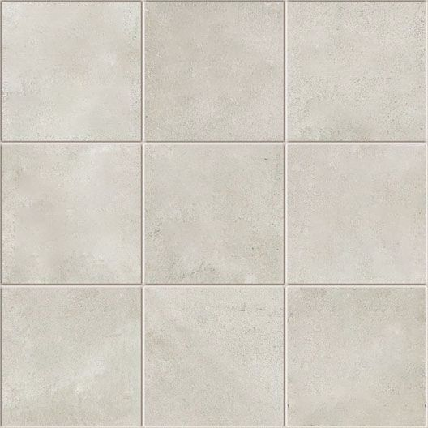

<html>

<head>
    <meta charset="utf-8">
    <title>WEB-VR</title>
    <link rel="stylesheet" href="#">
    <script src="https://aframe.io/releases/1.3.0/aframe.min.js"></script>
</head>

<body>
    <!-- cargar normales -->
    <a-assets>
        <!--img id="normal-madera" src="statics/NormalMadera.png">
        
        


    </a-assets>

    <!-- cargar escena -->

    <a-scene inspector="https://cdn.jsdelivr.net/gh/aframevr/aframe-inspector@master/dist/aframe-inspector.min.js">


        <!--a-entity position='0 0 5'  >
            <a-camera far='60' fov='80'></a-camera>
        </a-entity-->


        <!--a-box src='statics/madera.jpg' repeat='1 1' 
        normal-map='#normal-madera' 
        normal-texture-repear='1 1' 
        position="1 2 -5" 
        rotation="0 0 0" 
        normal-scale='1 1'></a-box>
        <a-plane position="0 0 -4" rotation="-90 0 0" width="4" height="4" color="#7BC8A4"></a-plane>
        <a-sky color="grey"></a-sky-->

        <!--a-plane rotation='-90'
        scale='15 15 1'
            src='#suelo'
                normal-map='#normal-suelo'
                    normal-scale='1 1'
                        repeat='5 5 5'
                        normal-texture-repear='5 5 5'
                    
                
        ></a-plane
        
        <a-plane 
            material='src:#suelo;
            repeat:5 5 5;
            normal-map:#normal-suelo;
            normal-texture-repeat:5 5 5'
            rotation='-90'
            scale='15 15 1'    
        ></a-plane-->


    </a-scene>

</body>

</html>